Capítulo 5
INDÚSTRIA ALIMENTÍCIA
CONTEXTUALIZANDOA indústria alimentícia é o conjunto de atividades industriais em que se preparam, normalmente em quantidades que devem ser comercializadas, alimentos ou ingredientes para a preparação de alimentos. Desta forma, são necessários diversos tipos de profissionais com os mais diversos tipos de conhecimento para trabalhar nesse setor. Um profissional que é de muita importância é o engenheiro de alimentos que pode se especializar nas mais diferentes áreas dessa indústria, utilizando técnicas e conhecimentos usados na fabricação, conservação, armazenamentos e no transporte de alimentos industrializados. Uma área importante desse setor é o planejamento das embalagens para o armazenamento dos alimentos. No design de embalagens um dos primeiros passos a serem tomados é a definição do formato e tamanho. Estes fatores estão intimamente ligados ao aspecto funcional das embalagens e à aceitação das mesmas no mercado, além de influenciar nos custos de produção e matéria-prima.
(RE)CONSTRUINDO CONHECIMENTOSCaro aluno, Ao longo deste capítulo, explorando temas relacionados à Indústria Alimentícia, propomos o estudo das Grandezas e Medidas estabelecendo comparações, destacando instrumentos necessários para medi-las e as principais figuras geométricas As atividades propostas a seguir vão auxiliar a responder à questão proposta no início do capítulo.
Você já parou para observar como são as embalagens que encontramos no nosso cotidiano?
Podem ser mais elaboradas...
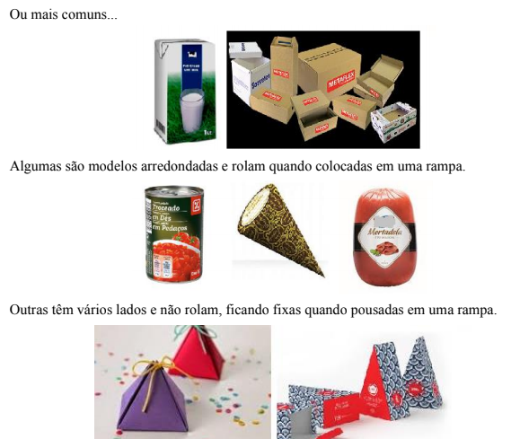Observando a variedade de embalagens que vemos em nosso cotidiano, percebemos que há várias formas que as compõem. O estudo destas formas denomina-se Geometria, no caso, Geometria das Embalagens.
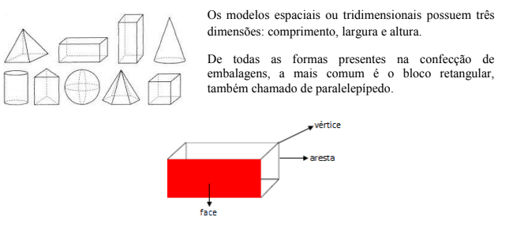As faces dos sólidos que não rolam, são figuras geométricas chamadas planas. Quando planificamos um bloco retangular, um cubo ou um prisma, observamos que suas faces são polígonos.
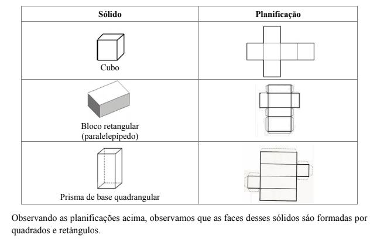PARA SABER MAIS
Além do quadrado e do retângulo há diferentes figuras planas. Observe o quadro que relaciona cada figura plana com sua nomenclatura.
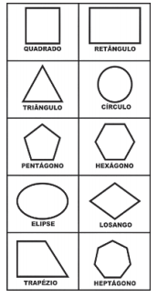As figuras planas com três ou mais lados são chamadas polígonos. Os polígonos são figuras bidimensionais, portanto tem duas dimensões comprimento e largura.
VOCÊ JÁ PENSOU SOBRE ISSO? Para elaborar embalagens o engenheiro de alimentos, além de conhecer formas, deve preocupar-se com suas dimensões e custo. Atributos como dimensão e preço podem ser medidos e são exemplos de grandezas. Assim, grandeza é tudo aquilo que pode ser medido. Diariamente lidamos com diferentes grandezas entre elas: comprimento, massa, capacidade, área, volume, tempo, temperatura e etc. Medir é o ato de comparar a quantidade de uma grandeza qualquer com outra quantidade da mesma grandeza que se escolhe como unidade – a unidade de medida. Para determinar a dimensão de uma embalagem devemos trabalhar com medidas de comprimento, de área, de volume, de capacidade e de massa.
PERÍMETRO E ÁREA DE FIGURAS PLANAS
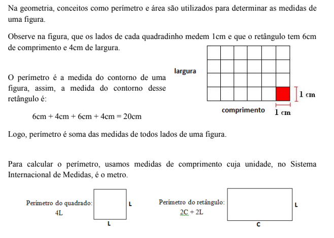CALCULANDO PERÍMETROS
Ao finalizar uma embalagem para colocar bombons, Paulo decidiu colocar um friso de cordão na parte superior da caixa conforme o desenho que segue.
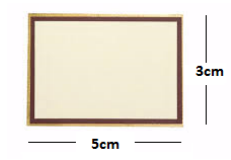 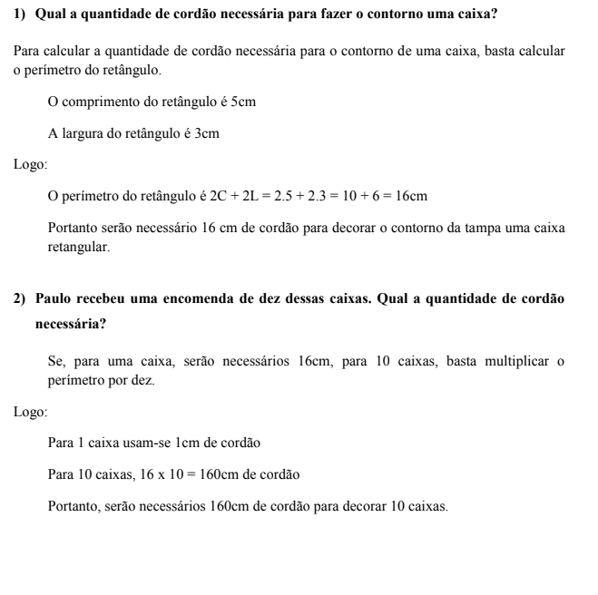 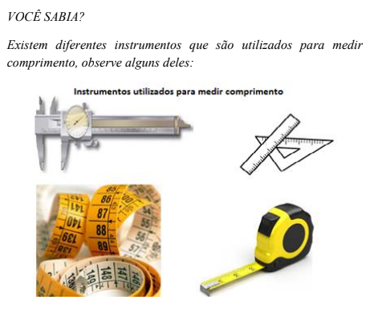 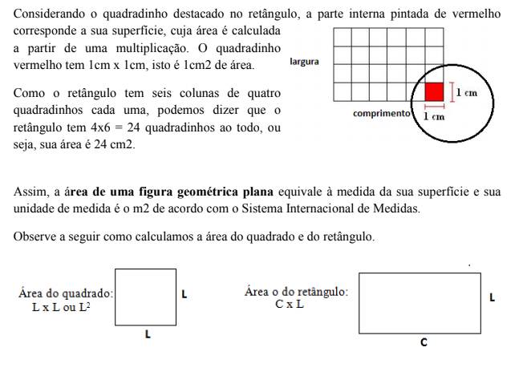CALCULANDO ÁREAS
Ana fabrica brigadeiro no pote e criou uma embalagem para acondicionar seu produto, mas precisa calcular a quantidade de papelão necessária para confeccioná-la.
Para calcular a área dessa embalagem é necessário planificá-la.
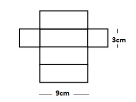 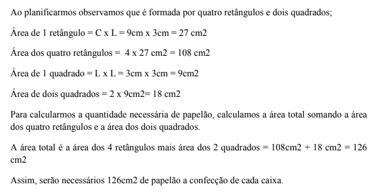RELEMBRANDO A HISTÓRIA
Em algum momento, ao logo da história, o homem sentiu a necessidade de determinar padrões referentes a grandezas e medidas e foi da comparação entre as grandezas de mesma origem que surgiram as ideias relacionadas à medida. Começamos a medir, utilizando as partes do corpo, como palmos, pés, dedos. Em determinadas civilizações, as medidas referentes ao corpo do rei eram adotadas como padrão para as medições. Por muito tempo, a relação entre as civilizações foi muito difícil, pois cada nação adotava um padrão para medir. Foi com o passar do tempo que obtivemos a padronizarão das medidas, que ocorreu por meio do Sistema Internacional de Medidas (SI), sendo regulamentada na década de sessenta.
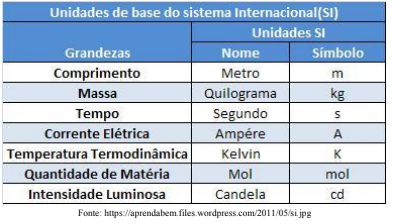Resolva as questões a seguir e verifique suas respostas no final do capítulo.
1) Complete as lacunas:
a) As faces dos sólidos que não rolam são formadas por ____________ e ______________.
b) O ____________ é soma das medidas dos lados de uma figura.
c) A ____________ é a medida da superfície de uma figura.
2) Circule os sólidos que não rolam.
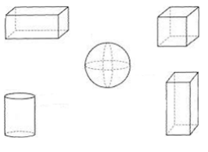3) Associe a figura ao seu perímetro:
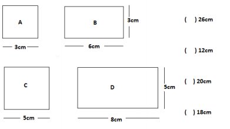4) Associe a figura à sua área.
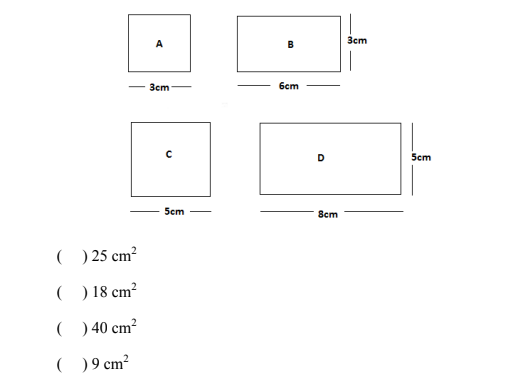5) Calcule o perímetro e a área das figuras a seguir:
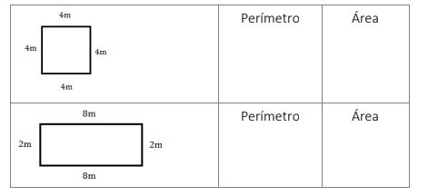6) Marque a alternativa que contém a planificação do cubo.
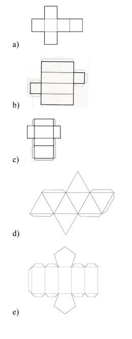7) Complete com V (verdadeiro) ou F (falso):
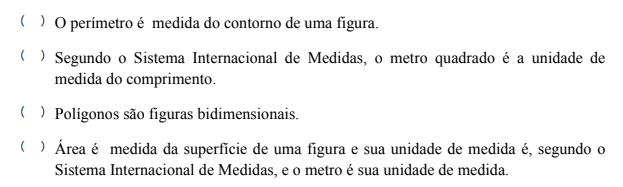 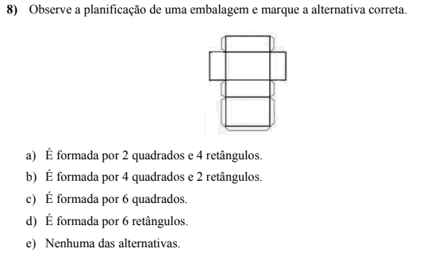O QUE APRENDI
Ao longo desse capítulo, trabalhamos com grandezas e medidas relacionadas confecção de embalagens na indústria alimentícia. Assim, por meio da planificação das figuras geométricas tridimensionais reconhecemos as figuras planas. Trabalhamos com medidas de comprimento e largura dessas figuras, vimos os instrumentos utilizados para medi-las, as unidades padronizadas pelo Sistema Internacional de Medida e aprendemos a calcular o perímetro e a área do quadrado e do retângulo.
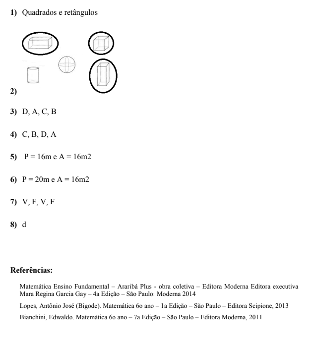